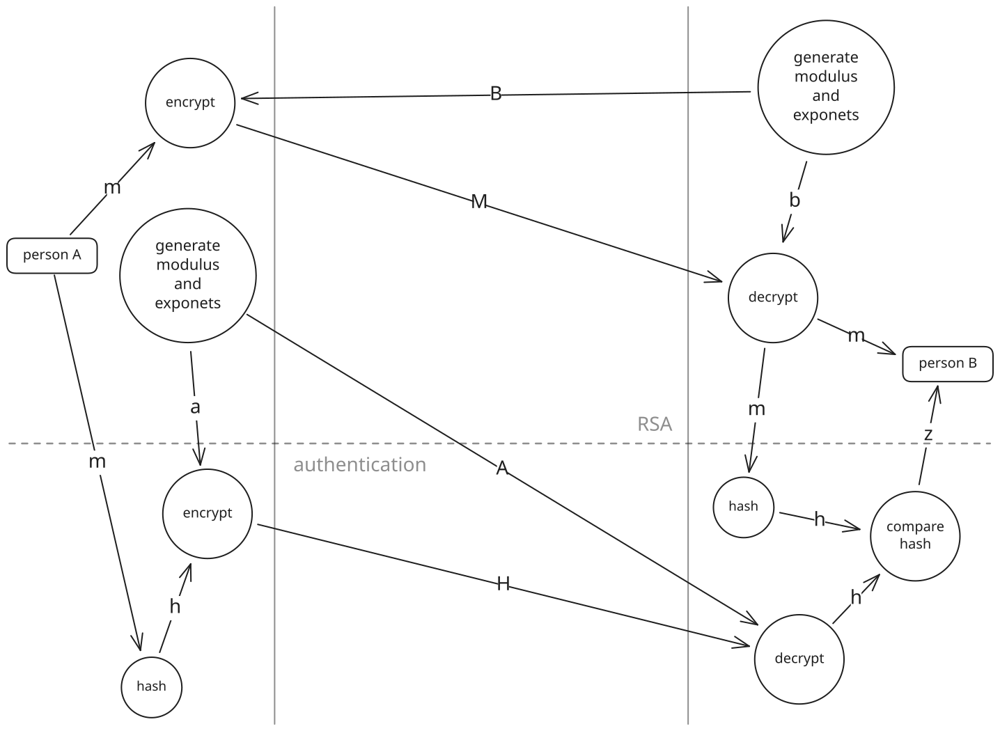

Why are prime numbers such a big deal in mathematics? It's quirky, but of what use is it really? This article will go into details of prime numbers and show how they are extensively used in key exchange and cryptography. The reader will find it no surprise that trust among 5 billion people using the internet rely on the humble prime.
Three problems will be addressed. Assuming an insecure network, a sender needs to send a message to a recipient that:
- no one else can read (encryption),
- is sent without prior exchanging of a secret key (key exchange),
- where the recipient can verify the sender is the sender (authentication).
Warning
This article is intended to take the reader on a discovery journey of interesting cryptography handshaking concepts and how prime numbers are used to secure them. Do not build and rely on your own security algorithms. There are plenty of robust open tools that are maintained by professionals.
There are two types of cryptography, symmetric where the same key is used for encryption and decryption, and asymmetric where each person has a key that is publicly accessible and a key that stays private/secret. Symmetric cryptography immediately raises the question of how a secret key can be shared over an insecure network.
Key Exchange
Diffie-Hellman (DH) key exchange was published in 1967 as a method to exchange a secret key over an insecure channel. It uses the hardness of the discrete logarithm problem to calculate an irreversible representation of a secret key. The representation can be publicly accessible since the secret cannot be obtained from it.
Consider a secret key \(a\) and its public representation \(A\) that will be owned by Alice. \(A\) can be obtained with \[A = g^a \bmod{n}\]
where \(g\) is a base (usually 2 or 5) and \(n\) is a large number that makes it hard to reverse the calculation and get back to \(a\) from \(A\).
Insight
It is easy to calculate the modulo of an exponential function \[X = g^x \bmod{n}\] if the base \(g\), the power \(x\) and the modulus \(n\) is known, but it is hard to calculate \(x\) from \(X\) if \(n\) is a large prime number.
Bob does the same to obtain \(B\) with his secret key \(b\) and sends it to Alice to compute \(z\) with
\[B^a \bmod{n} = g^{b a} \bmod{n} = g^{a b} \bmod{n} = z\]
Bob can also compute the same \(z\) by using \(A\) and \(b\).
\[A^b \bmod{n} = g^{a b} \bmod{n} = z\]
Note that a shared key (\(z\)) was established without ever exposing secret keys \(a\) or \(b\) and no one can compute \(z\) with only \(g\), \(n\), \(A\) and \(B\). Still, one may wonder why \(n\) must be specifically prime.
If \(n=15\) and \(g=2\), then \(z\) only falls within the set of \(\zeta = \{1,2,4,8\}\), instead of utilizing the entire possible range \(\{1,...,n-1\}\). A utilization ratio, \(\gamma\), can thus be expressed as the number of elements utilized, \(|\zeta|\), divided by \(n-1\). Thus, when \(n=15\) and \(g=2\), the utilization ratio, \[\gamma = \frac{|\zeta|}{n-1}=\frac{4}{14}\] is approximately 0.286. In this case \(A\), \(B\) and \(z\) only cycle through 28.6% of the numbers making it easier to guess the shared key \(z\). Figure shows how much numbers are utilised. With \(n=19\) and \(g=2\) it cycles through all the numbers \(\{1,...,n-1\}\). Thus \(\gamma = 1\), which is usually the case when \(n\) is prime.
\(n\):
\(g\):
Modular clock diagram.
Sequence:
Plot of \(\gamma\) against \(n\) with prime \(n\) values highlighted with green lines.
Figure shows a graph of \(\gamma\) over a range of \(n\) values. Even numbers of \(n\) are omitted and prime \(n\) numbers are highlighted with green vertical lines. Click on the points to set \(n\) and \(g\) above and see how each pattern look in the modular clock diagram.
The Atoms of Math
If asked to find the factors of 5040, a sensible strategy might be to start from the lowest numbers and see what can divide 5040. \[\begin{align} 5040/1 &= 5040 && \text{(no effect, use 2)} \\ 5040/2 &= 2520 && \text{(continue with 2)} \\ 2520/2 &= 1260 && \text{(continue with 2)} \\ 1260/2 &= 630 && \text{(continue with 2)} \\ 630/2 &= 315 && \text{(try to divide by 3)} \\ 315/3 &= 105 && \text{(try again with 3)} \\ 105/3 &= 35 && \text{(continue with 5)} \\ 35/5 &= 7 && \text{(only divisible by 7)} \\ 7/7 &= 1 && \text{(found all factors)} \\ \end{align}\]
The list of factors are \[2*2*2*2*3*3*5*7=5040\] That's interesting because 5040 was actually constructed from factors \[2*3*4*5*6*7=5040\] However, 4 and 6 have factors of their own, thus \[\begin{align} 5040&=2*3*4*5*6*7 \\ &=2*3*(2*2)*5*(2*3)*7 \\ &=2*2*2*2*3*3*5*7 \\ &=2^4*3^2*5*7 \end{align}\]
Notice that all the factors are prime numbers. In fact, every number has only one list of factors that is all prime. This is called the Fundamental Theorem of Arithmetic and was detailed by Carl Friedrich Gauss in 1801. Admittedly, I was embarrassed to only learn this now, especially after using words like peculiar and quirky.
Prime numbers are not just weird numbers in everyday counting numbers, they are actually the atoms of which all numbers are made up of. This also means that two prime numbers can be selected, and the product of them will only have those two numbers as factors. When asked to find the factors of 679, only 17 will be found to divide it together with 41. When asked about 22790237 one will have to go up to 3187. It becomes apparent that factoring products of two large primes is difficult.
Insight
Multiplying two large prime numbers results in a new prime number with only the two prime factors. The multiplication (forward) is easy, but factoring it (backwards) into the two original primes is hard.
Inventing RSA
With asymmetric cryptography each person has a public key (\(S\), \(R\)) and a private key (\(s\), \(r\)). Anyone can see the public keys but only the owners ever know the private keys. The sender can encrypt a message with the recipient's public key (\(R\)) and only the recipient can decrypt the message with the matching private key (\(r\)). Encryption is established without exchanging any secret keys.
The method in Insight 1 can also be used to encrypt messages. The message \(m\) is used instead of the base \(g\) and raised to the power of an encryption key \(e\). The encrypted message \(M\) is thus \[M=m^e \bmod{n}\] However, it will be convenient to also be able to decrypt \(M\) in the same way by applying a decryption key as another power to get back to \(m\) \[m=M^d \bmod{n}\] which is equivalent to \[\begin{equation} m \equiv m^{e d} \pmod{n} \tag{eq 1} \end{equation}\]
Rivest, Shamir and Adleman published RSA in 1977 in which they derived \(e\) and \(d\) to encrypt and decrypt messages. The RSA authors build on math discovered three centuries earlier. The initial version of Euler's theorem was first published in 1736 as a proof of Fermat's little theorem (published without proof in 1640).
Refer back to how modulo sequences went though the numbers in section 1. It's clear in the short vulnerable sets that the sequences always end with one \(\{1,2,4,8,1,2,4,8,1,...\}\). The same is true when a large prime modulus is used. This phenomenon can be used to decrypt an encrypted value by moving it forward to the end of the sequence.
Euler's theorem: \[m^{\varphi(n)} \equiv 1 \pmod{n}\] shows that there is a power (Euler's Totient) one can raise a base to, that results in a remainder of 1. So if one power (in an exponent) is used to encrypt a value, a second power can be calculated that decrypts it again.
It starts by generating two large prime numbers, \(p\) and \(q\), and calculating the product. \[n = p q\] \(n\) is a new prime number that can be publicly shared while \(p\) and \(q\) remain secret because of the irreversibility pointed out by Insight 2. Thus, \(p\) and \(q\) can still be used to calculate Euler's Totient: \[\varphi(n) = (p-1)(q-1)\]
\(e\) and \(d\) need to be calculated using \(\varphi(n)\). First, \(1 \pmod{n}\) is isolated in equation 1.
\[m^{ed} \equiv m \pmod{n} \iff m^{ed-1} \equiv 1 \pmod{n}\]
Secondly, Euler's theorem is modified to handle any multiple of \(\varphi(n)\). \[(m^{\varphi(n)})^k \equiv 1^k \equiv 1 \pmod{n}\]
The latter two equations can now be combined. \[m^{\varphi(n)k} \equiv m^{ed-1} \equiv 1 \pmod{n}\]
The exponents \(e\) and \(d\) can then be calculated with: \[ed-1 = \varphi(n)k \iff ed-\varphi(n)k = 1\]
that can be transformed into modulo form (this is why the multiple \(k\) was required earlier): \[ed \equiv 1 \pmod{\varphi(n)}\]
Encryption and Decryption
Two primes are required to produce the modulus \(n\) and Euler's Totient \(\varphi(n)\).
\[n = p q\] \[\varphi(n) = (p-1)(q-1)\]
\(p\):
\(q\):
\(n\):
\(\varphi(n)\):
\(e\) must be smaller than \(\varphi(n)\) and be coprime with it. A number that, in its binary form, has zeros and starts and ends with 1 is a preferred for \(e\). \(d\) is then obtained by finding \(d\) where \(e d \bmod{\varphi(n)} = 1\).
\(e\):
\(d\):
Encryption on a Single Number
The public key consists of \(e\) and \(n\). Anyone can use a recipient's public key to encrypt a number \(x\) with \(c = x^e \bmod{n}\).
\(x\):
\(c\):
The recipient's private key consists of \(d\) and \(n\). The encrypted number can be decrypted with \(x = c^d \bmod{n}\).
\(x\):
Encryption on a String
The number \(x\) is probably only 4 bytes. To encrypt strings of bytes a padding scheme is used that first converts the string into a 4 byte sequence of padded numbers that can be passed through encryption. The padding scheme is reversed after decoding to obtain the original message.
Original message:
Original characters:
Padded message:
Encrypted message:
Decrypted message:
Authentication
Notice that only two of the original goals were covered thus far. The receiver still needs to know that the sender is in fact the sender. With RSA this can be done by simply encrypting a string with the sender's private key. The receiver can then use the sender's public key to decrypt it and see if it makes sense. The only problem is that everyone can decrypt that message.
A popular solution to get both encryption and authentication is to run the message content through a hashing function like SHA-256 prior to encryption. The hashing is an irreversible function that takes in data and produces an unpredictable digest (number) that's unique. Hashing the message and encrypting the hash with the private key is called signing the message or creating a digital signature.
Anyone that decrypts the signature only gets the hash digest. However, the recipient can apply the same hashing on the private-key-decoded message and compare it with the hash. If it matches, the recipient knows that the message is signed by the sender. Authentication is established together with secure encryption. The RSA encryption-decryption flow with authentication can be seen in the following diagram.

Conclusion
This article shows how prime numbers are used to secure DH key exchange and RSA. Even SHA-256 hash algorithms used in authentication rely on prime numbers for randomization. This junction in math and cryptography is such a contested topic that there are two Millennium Prize Problems, the P vs NP Problem and the Riemann Hypothesis, that relates to it. Proving them is important because if any two of these prove different than what is assumed, current cryptography standards are in trouble.
People often fall ignorant of the role of mathematics. Prime numbers get far less attention than they should be since they are the atoms of the numbers we use everyday. Euler and Fermat probably did not realise how important their theories would become centuries later. Mathematics is a deep, slow form of knowledge that should not be discarded if its value cannot immediately be realised.
The beauty and genius with which the key-exchange, encryption and authentication problems were solved is astonishing. But as always, it was made possible by many discoveries and innovations that came before it. Big or small, don't stop exploring and don't despise small contributions.